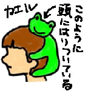

|
男子フィギュアでカエル降る！ ケロリストか？女子試合にも１年前に出現！
 【神奈川発=kei-f同志記者】「2000国際オープンフィギュアスケート選手権大会」におかれまして、またまたカエルが登場しました!!!それはフランスの男子フィギュアスケート選手、キャンデローロ選手が感動的な演技を終えて得点の発表を待っているとき、なんと!上方から手足を含めておよそ1メートルあろうかという巨大カーミット（12月27日で紹介したものか？）が降ってきたのです!!!するとキャンデローロ選手はおもむろにそのカーミットを抱き上げると、笑顔でその右手をとり、カメラに向かって振っていました。 そのカエルが幸運を導いたのか、キャンデローロ選手は最も観客を魅了した選手に送られる賞(賞の名前は失念!)を受賞したのです!!!しかし、フィギュアスケート界のファンにはカエラーが多いのでしょうか??? と思っていたら、その番組の中で『カエル少女』を発見!!!すわ、カエル少女再びかっっっ!!!という光景を目にしました。図にあるようなカエルのかぶり物をした少女が観客の中にいたのですっっっ!!!これは果たして手作りか、はたまた売っているのか分かりませんが、非常に印象的でした。もしかして、その少女がキャンデローロ選手にカーミットをプレゼントしたのでしょうか…
大阪のＥＸでもカーミット【大阪発=ＭＯＴＯＫＯ様】ホンダ杯でキャンデロロ選手が持っていたカーミットですが、同じ大きさの物を昨年大阪で開かれた、フィギュアスケートスーパースターズでも見ました。その時のカーミットは、アイスダンスのアンジェリカ・クリロワがＧＥＴしたらしく、彼女はそれを嬉しそうに抱きかかえてリンクを１周し、最後に記念の集合写真を撮るときにも持っていました。全力挙げカエル少女追跡へ！【全国かえる奉賛会】実は２年ほど前にも、女子フィギュアの試合後に、巨大カーミットを投げ込んだ、女性ファンのことが報告されている。選手は、カエルを抱えたままリンクを周回したそうである。そのときの彼女と、今回の彼女が同一人物である可能性もあるなー。 きっと熱烈なケロリストであろう！全国かえる奉賛会では、彼女に賞状を配達したいので、さらに情報を待つ！！
モロー君バレンタイン企画が進行中！ 【福岡発=モローの娘・弟子・りょうこ同志記者】第１期、２期の分譲が大好評のうちに完売したモロー君の携帯ストラップを、さらに増産しています。初売りにしようと思ったけど、そろそろバレンタインデーも近いし、ぜひ彼氏にモロー君をプレゼントしましょう！！まもなく発売開始です。
【福岡発=モローの娘・弟子・りょうこ同志記者】第１期、２期の分譲が大好評のうちに完売したモロー君の携帯ストラップを、さらに増産しています。初売りにしようと思ったけど、そろそろバレンタインデーも近いし、ぜひ彼氏にモロー君をプレゼントしましょう！！まもなく発売開始です。
けろテン市場を１３日以降、チェックしよう！
投稿採用者に武功カエル徽章を授与！ |
かえる古新聞過去に取り上げた記事を見出し付きで一覧したい人は、ここをクリック◆創刊号を見る◆先週号を見る◆話題の号を見る◆かえる新聞の昔を読む
|
私も入っています。。全国かえる奉賛会
大王様に会うには、このバナーをクリック。ずっと奥に写真館があるぞ。全国かえる奉賛会に入会するには、自分のホームページのどこかに、下の部分を追加するとバナーがリンク付きで表示されるぞ。どんどん入会しましょー |


|